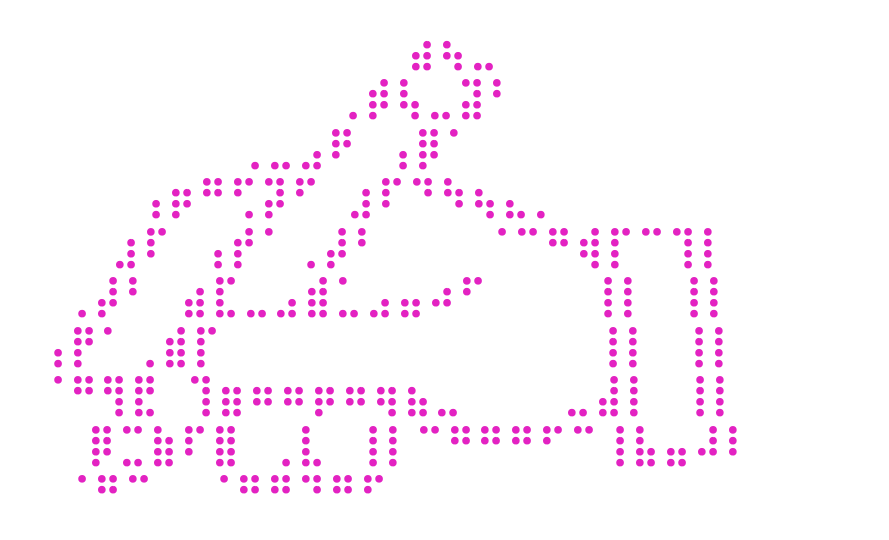

Start where you are
Run one command and stay in the terminal
There is no application to configure, workspace to organize, or interface to learn

By Hand Research studies model interpretability and explainability at the math and algorithm level.
byhand CLI is a tool that extends this explainability by visualizing models and AI systems
Run one command and stay in the terminal
There is no application to configure, workspace to organize, or interface to learn
Move operation by operation, connecting attention, equations, tensor shapes, and parameter sources
Get started
Install on an Apple Silicon Mac, then visualize a compatible model where you already work.
curl -fsSL https://raw.githubusercontent.com/imruljubair/byhand/main/install.sh | sh
byhand model --ollama llama3.2